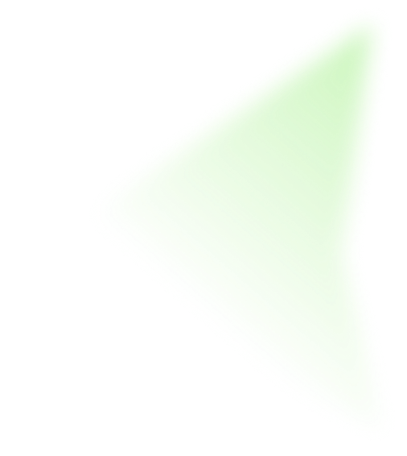

여론조사
주간랭킹
NEW
소개

윤석열
[정치쇼] 전용기 "추가녹취 있을 것…尹 담화? 특검 입장 밝혀야"
더보기
김건희
[정치쇼] 전용기 "추가녹취 있을 것…尹 담화? 특검 입장 밝혀야"
더보기
한동훈
[정치쇼] 전용기 "추가녹취 있을 것…尹 담화? 특검 입장 밝혀야"
더보기
이재명
[정치쇼] 전용기 "추가녹취 있을 것…尹 담화? 특검 입장 밝혀야"
더보기
김영선
[정치쇼] 서정욱 "尹 공천개입? 법적 문제 없어" VS 설주완 "거짓말 실시간 목도 중"
더보기
김정은
북, 탄도미사일 여러 발 발사…미 대선 앞두고 도발
더보기
정치인별 둘러보기
정치인별 뉴스 보도량
정치인별 유튜브 언급량
전체
긍정
부정
궁금한 날짜 위에 마우스 커서를 올리거나 터치해 보세요
10월 30일
10월 31일
11월 1일
11월 2일
11월 3일
11월 4일
11월 5일
0
10
20
30
40
50
60
70
80
90
100